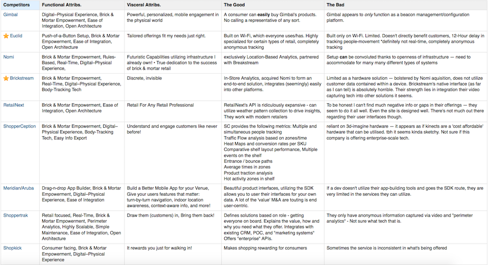
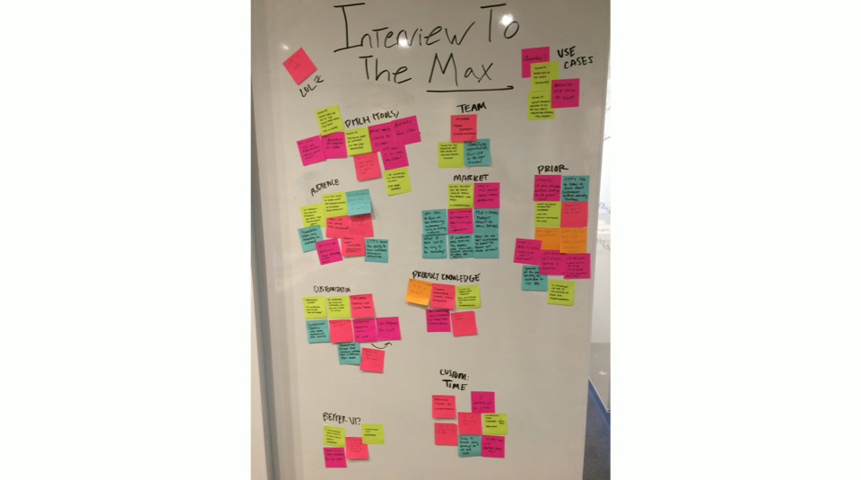
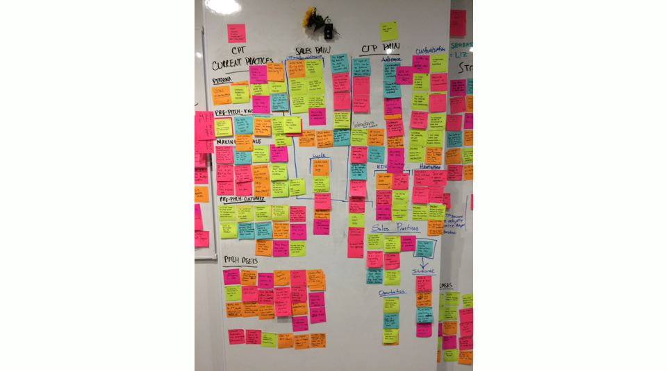
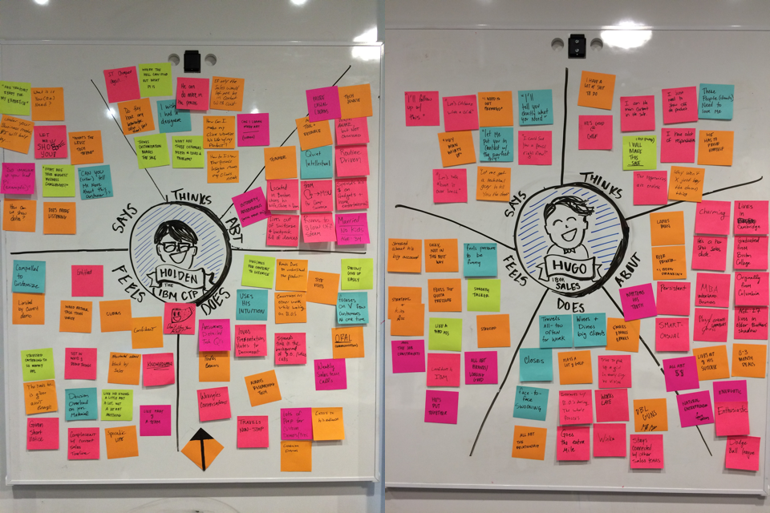
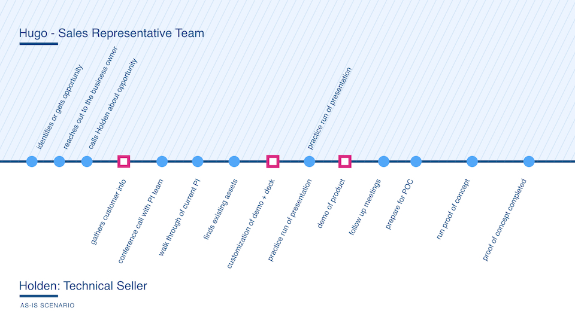

As part of the on-boarding process to IBM Design, the studio runs an incubator program. The incubator program takes some of the hardest problems in IBM and puts design as a focus to create a solution. The catch is, these are six week sprints. Together visual designers, ui/ux designers, design researchers and front end developers create blue sky solutions. The final pitch showcased a deliverable to business unit executives in product, engineering and sales.
The team I worked with consisted of seven people.
The project brief focused around Presence Insights (PI). PI was a new IBM offering going to market. PI collected and analyzed the data the comes from bluetooth beacons in brick and mortar store environments. The product was in its final phases and IBM was rolling up a sales team to handle distribution. The business unit recognized that they did not know how to tell the story of this product. They came to the incubator program needing a design centered solution.
Our project goal was to design a new approach to enable the Presence Insights team to clearly demonstrate, face-to-face, the value of Presence Insights & have the customer understand the business benefits by the end of the sales progression.
The original perception of this project was a point of misalignment. The original offering team, thought that our incubator team was going to do production level work of their next release. In reality our intention was to deliver version “x” of their product. Showing them, what could their offering could be in one to two years down the line.
Given that this was a six week sprint, we understood we needed to work fast and be mindful of our time. Every Friday we would gather our executive stakeholders to deliver a playback. We highlighted what we had accomplished in the week and which direction we were moving toward. This allowed for alignment as a collective group. A high-level breakdown of our week agendas
I believe every design project at some level should start with research. This sprint was no different. Building an understanding of the domain allows for recognition of potential opportunities. Given our time frame my team and I needed to understand our product quick.
I scoped our generative research into three key areas.
I started with secondary research. Using various analyst reports, I saw how the location sensing market was expanding. I communicated to my team how companies were thirsty to gain insights on their customers. When the technology for bluetooth beacons came out a few years back it seemed to be the perfect fit. Beacons used the location on a cellphone to see and understand a customer’s behavior. Whether in stores or at events, the technology was versatile. It would allow stores to do simple things like run instant in-store promotions. It could also let a store predict a redesigned layout for the holidays to reduce congestion. The customer in return received a personalized experience. Now their favorite stores would understand their wants and needs. In theory it was a "win-win". But there was a problem! The data outputted from bluetooth beacons was confusing and unclean. If a company had interest in implementing beacons, it would need at least a team of data scientists. This is where PI came into play. PI would allow for beacons to send their data to one centralized location. The software would then clean the data and make it easy to understand. It created insights by showing graphs and visualizations about a company’s customer behavior. It was brilliant.
IBM was not the only company to take notice of the potential market for location sensing. My team needed to understand who were other players in the market. How were they telling their story to close sales? The product team from PI had identified nine competitors. My team and I began scouring their websites and pages to understand a few key things.
Time was not on our side. The team made sure to synthesize our findings into high level statements and plot them into a grid.
The key takeaway of this exercise focused around how at the time there was not a good way to show the value in bluetooth beacon technology and what it could do for a company.
The main barrier of entry was the cost to get a system up and running coupled with a learning curve for the software. It was a tough sell. This research further confirmed our original goal. We needed to build a new approach to enable the PI team to show their customers the value of the product.
The next phase for the team was to begin to understand our user’s wants and needs. We needed to learn what was the job of a salesman today? Only then, could we understand what we could influence and what needed to change. Before the project kicked off, our team lead located users for this sprint. IBM is a global company we reached out to IBM technical sellers from all over the world. They would be the ones whose task would be to sell this product later on. I worked with my team to set up five calls with these sellers.
The team needed to be smart about our time. Spending an afternoon at creating "need to know questions" was essential to moving forward.
Clustering the questions into categories allowed me as the researcher to create focus areas.
I chose to use a script that asked the same questions to every seller. It created comparative information between the sellers. By doing so we could see how sellers in Mexico approached their process compared to the US. We saw the reasoning behind why it took longer in Europe to close a sale because of EU regulations. We took the information from our users and synthesized as a group. We put our insights on post-its and began tacking them to a whiteboard. As the researcher I was looking for trends that would help us inform the next stage of our sprint. I did this by having the team cluster the higher level insights on our board.
From these interviews many powerful insights came about. Below are some of the most impactful ones
Design should be user centered. A key component to my process is building empathy for my users. By doing so, as a designer I can begin to think like my user and create product that will excite.
From our user interviews we had many powerful insights but not a lot of empathy. Research and empathy are not something just one person should own. As a group we took the information which I had collected and began to build empathy maps. We needed to know our users on a more intimate level. What would they say, think, do, feel on a daily basis?
This exercise lead to two personas. We called our technical seller on the left, Holden. From my research we also found our sellers have a sales counter-part to help close deals. Hugo is a representation of that role.
With these personas in mind, we started to think about what does the as-is process look like? We focused on laying out the sales cycle process.
The squares highlighted in pink signify areas that were hand-off points between either Holden and Hugo or Holden and a customer. From this exercise we were able to see three clear potential areas of opportunity.
I love ideation because it fosters “yes and” collaboration. During this phase I find joy in working with teams to take an idea and continue to build on it. It is one of my favorite parts of design thinking.
We as a team took a full day to ideate our ideas at a high level.
Our ideas spanned across many verticals. During this phase we explored everything from dissolving the whole technical seller program and replacing it with a fully digital experience to creating instant on-site customer demos. The intention was to push the limits about what this solution could be. To create something which would shake up the way work got done but drive immense amounts of value for our users.
We played back our ideas mid-week to our executive stakeholders to align. The initial reaction incited push-back. It drove my team to a rather large pivot which equaled 40 hours worth of work in about three days. It was not until we presented the final deliverable did the collective group have the “ah-ha!” moment.
We named our final deliverable IBM Enable. It took the needs identified through my research and developed into a coded prototype. IBM Enable allowed sellers like Holden and Hugo to collaborate during the process of preparing and presenting demonstrations. The prototype allowed any seller to go into our web-portal and type in the name of a corporation with a web-presence. IBM enable would then scrub the website and grab relevant fonts, colors and images which a seller might want to use in a presentation. Using our tool it would allow them to choose one of four digital experiences to aid in the explanation of what PI could do for that specific company. A highlighted component of IBM Enable was the ability to create a customer profile. This would be where a seller could share any background information they knew on the potential customer. Our solution allowed a clear and purposeful story to for our sellers which was customer focused and clearly showed the value of PI.
The video below shows our final presentation. We created an experience around the ideal execution of this material. The password for this video is: enablement.
As mentioned above, the original ask of sprint was production work. My team in six weeks was able to address the bigger problems that existed in the delivery model and create a unified digital experience for our users.
Post final deliverable, IBM Enable was picked up the following week for development. The intention is to pilot this program with PI and then see if it could be scaled further. Executive stakeholders believe this solution could save IBM millions in costs during the preparation phase of sales cycles.